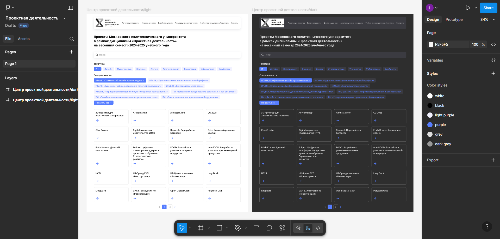

Журнал
Прогресс: Начало работы (10.02.2025)
Мы начали проект с формирования команды и распределения ролей.

Сделан дизайн для ПД в ЛК
Сделан дизайн витрины проектов

Наш проект по дисциплине «Проектная деятельность» направлен на решение актуальных проблем сайта и развитие навыков командной работы. Ознакомьтесь с целями, участниками и прогрессом работы.
Узнать большеНаш проект посвящен улучшению удобства сайта Московского Политеха. Основные цели: Сделать дизайн для проектной деятельности в личном кабинете. Сделать новый дизайн витрины проектов. Проект включает этапы планирования, исследования, и разработки.
Вклад: Дизайн вкладки ПД в новом ЛК (преподавательская сторона).
Вклад: Анализ сервисов для решения существующих проблем цифровой инфраструктуры ПД.
Вклад: Дизайн витрины проектов со всеми внутренними страницами в стиле ЛК Политеха, Паспорт проекта.
Вклад: Анализ цифровой инфраструктуры для ПД, Требования для проекта, Дизайн витрины проектов со всеми внутренними страницами в стиле ЛК Политеха.
Вклад: Презентация к первой аттестации, Презентация ко второй аттестации.
Вклад: Выявление недостатков и слабых сторон у цифрового сервиса ПД, Создание календарного плана.
Вклад: Дизайн вкладки ПД в новом ЛК (преподавательская сторона).
Вклад: Распределение ролей, Постановка задач, Распределение по задачам.
Вклад: Диаграмма Ганта, Текст для презентации.
Вклад: Анализ Procollab, Дизайн вкладки ПД в новом ЛК (студенческая сторона).
Вклад: Анализ Procollab, Дизайн вкладки ПД в новом ЛК (студенческая сторона).
Вклад: Дорожная карта, Дизайн вкладки ПД в новом ЛК (студенческая сторона).
Вклад: Выявление основных проблем существующей цифровой инфраструктуры ПД, Создание календарного плана, Дизайн витрины проектов со всеми внутренними страницами в стиле ЛК Политеха.
Мы начали проект с формирования команды и распределения ролей.
Здесь собраны полезные материалы, которые помогут лучше понять суть проекта и его контекст.